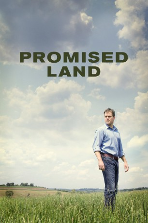

#163 Promised Land
 
 IMDB-Wertung: 6.6 / 10
IMDB-Wertung: 6.6 / 10  Metascore: 55
Metascore: 55 
Der Unternehmensvertreter Steve Butler wird gemeinsam mit seiner Partnerin Sue Thomason in eine US-amerikanische Kleinstadt auf dem Lande geschickt, um die Bewohner von den Expansionsplänen seiner Erdgas-Firma und ihrer Rolle dabei zu überzeugen. Angesichts der starken Belastung des Ortes durch die wirtschaftliche Krise glauben die beiden an einen einfachen Job. Warum sollten die Bewohner ihnen auch nicht die Bohr-Rechte an ihrem Grund und Boden abtreten? Das Geld könnten sie gut gebrauchen. Doch da haben die beiden Karriere-Menschen ihre Rechnung ohne die eingeschworene Dorfgemeinschaft gemacht. Ein angesehener Lehrer zieht mit der Unterstützung von Umweltschützer Dustin Noble und der engagierten Alice ins Feld gegen Butler und Thomason.
Jahr: 2012
Dauer: 106 Minuten
FSK: 6
Land: USA Studio: Focus FeaturesTonspuren: DTS - ,
Untertitel:
Auflösung: 1080p (1920×1040) Größe: 8007 MB
Genre: Drama
Regisseur:  Gus Van Sant
Gus Van Sant
Drehbuch: John Krasinski, Matt Damon, Dave Eggers
Soundtrack: Danny Elfman
Darsteller:
 Matt Damon als Steve Butler
Matt Damon als Steve Butler- Benjamin Sheeler als Attendant
 Terry Kinney als David Churchill
Terry Kinney als David Churchill Joe Coyle als Michael Downey
Joe Coyle als Michael Downey Hal Holbrook als Frank Yates
Hal Holbrook als Frank Yates- Dorothy Silver als Arlene
 Frances McDormand als Sue Thomason
Frances McDormand als Sue Thomason Titus Welliver als Rob
Titus Welliver als Rob- Lexi Cowan als Drew's Girl
 Tim Guinee als Drew Scott
Tim Guinee als Drew Scott- Sara Lindsey als Claire Allen
- Frank Conforti als Coach
 Rosemarie DeWitt als Alice
Rosemarie DeWitt als Alice- Kristin Slaysman als Gwen
 John Krasinski als Dustin Noble
John Krasinski als Dustin Noble- Andrew Kuebel als 6-Year-Old Boy
 Dan Anders als Large Man
Dan Anders als Large Man Lucas Black als Paul Geary
Lucas Black als Paul Geary Scoot McNairy als Jeff Dennon
Scoot McNairy als Jeff Dennon- Cain Alexander als Danny Thomason
- Lennon Wynn als Lemonade Girl at Gym
- Nicole Beattie als Upscale Restaurant Patron , uncredited
 Todd Bobenrieth als McKinley Resident , uncredited
Todd Bobenrieth als McKinley Resident , uncredited Troy Bogdan als Farmer , uncredited
Troy Bogdan als Farmer , uncredited- Cara Clark als Fifth Grader , uncredited
 Joe Fishel als Small Town Resident , uncredited
Joe Fishel als Small Town Resident , uncredited- Joe Gallipoli als Business Executive , uncredited
- David Gragg als Maitre d , uncredited
- Vito Grassi als Restaurant Patron , uncredited
 Rosemary Howard als McKinley High Spanish Teacher , uncredited
Rosemary Howard als McKinley High Spanish Teacher , uncredited John W. Iwanonkiw als Officer Breedlove , uncredited
John W. Iwanonkiw als Officer Breedlove , uncredited- Joanne Jeffers als Upscale Restaurant Patron , uncredited
 Tiffany Sander McKenzie als Festival Worker , uncredited
Tiffany Sander McKenzie als Festival Worker , uncredited F. Robert McMurray als Farmer at Town Hall Meeting , uncredited
F. Robert McMurray als Farmer at Town Hall Meeting , uncredited Phil Nardozzi als Restaurant Patron , uncredited
Phil Nardozzi als Restaurant Patron , uncredited- Jennifer Obed als Alice's Friend , uncredited
- Brent Reichert als Upscale Restaurant Patron , uncredited
- Whitney Romito-Mason als Bar Maid , uncredited
- John Seibel als Butcher , uncredited
- Douglas Slygh als Restaurant Patron , uncredited
- Debbie Vogel als Restaurant Patron , uncredited
- Lawrence Whitener als Town Hall Meeting , uncredited
- Carla Bianco als Waitress
- Garrett Ashbaugh als Basketball Player
- Jericho Morgan als Jericho
- Max Schuler als Carson Allen
- August G. Siciliano als 5th Grader
 Ken Strunk als Gerry Richards
Ken Strunk als Gerry Richards- Karen Baum als Lynn
- Gerri Bumbaugh als Jesse the Bartender
Datei: X:\2012(N-Z)\Promised Land (2012, FSK6, 1920x1040).mkv seit 14.02.2015
Festplatte: HD 2012(N-Z)-2013(A-H)
 Es gibt insgesamt 138 Filme in der Gruppe '2012(N-Z)'
Es gibt insgesamt 138 Filme in der Gruppe '2012(N-Z)'